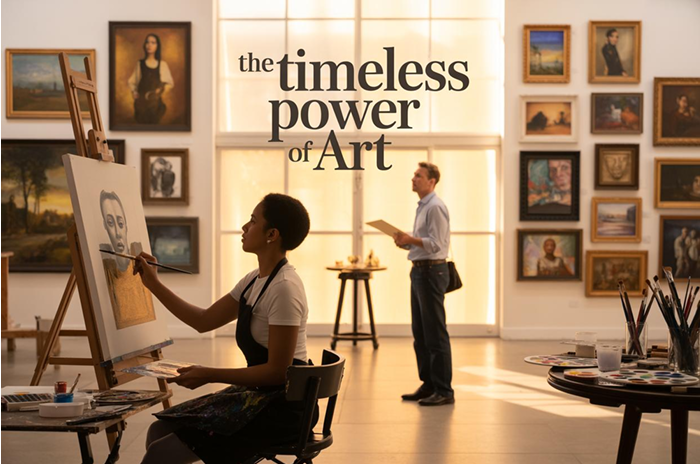
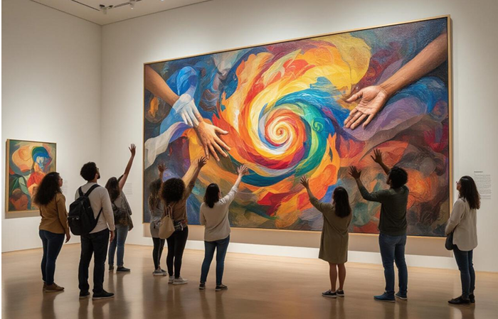
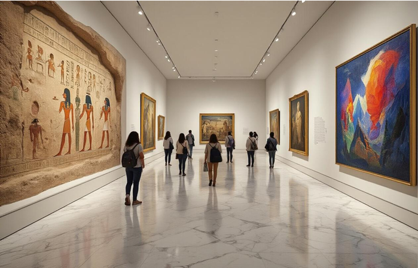
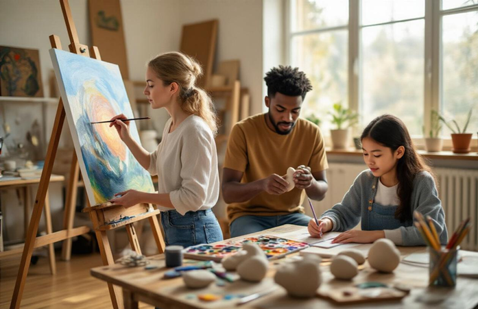
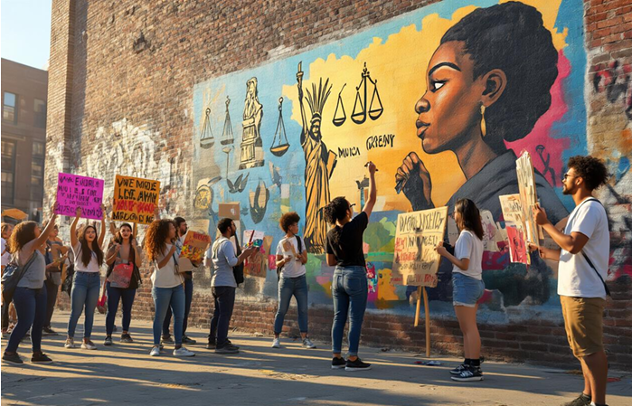
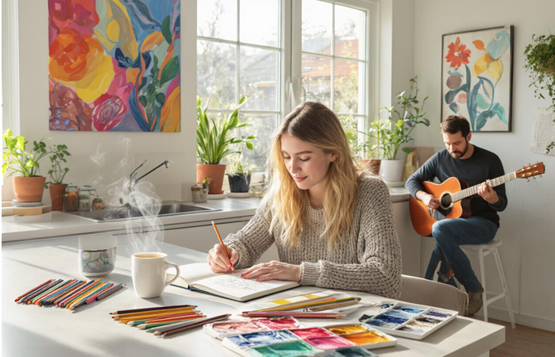
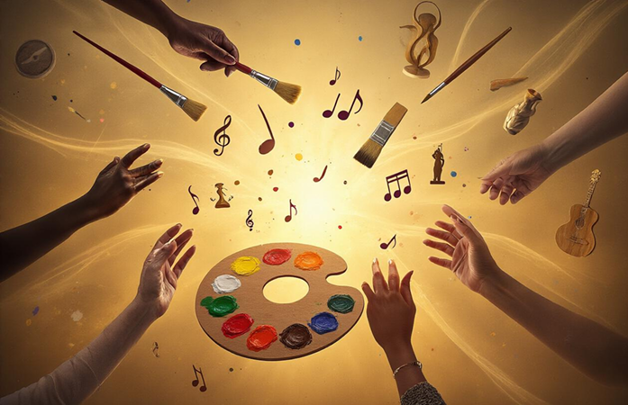

The Timeless Power of Art: A Journey Through Creativity
Art has shaped human civilization for thousands of years, serving as both mirror and catalyst for our deepest emotions, beliefs, and aspirations. This exploration of creativity's enduring influence is designed for art enthusiasts, students, educators, and anyone curious about how creative expression impacts our world and personal well being.
Throughout history, art has broken down barriers between cultures while simultaneously documenting our collective human experience. From ancient cave paintings to digital masterpieces, creative works reveal universal truths that connect us across time and geography.
Art's Universal Language That Transcends Cultural Barriers
How Visual Expression Communicates Beyond Spoken Words
Art speaks where words fail. A single brushstroke, photograph, or sculpture can convey emotions that might take paragraphs to describe. When you stand before Edvard Munch's "The Scream," you instantly feel the anxiety and existential dread without reading a single caption. This immediate emotional connection happens because visual art taps directly into our subconscious, bypassing the need for translation or interpretation.
Ancient Cave Paintings to Modern Digital Art Connections
The thread connecting Lascaux cave paintings to today's digital masterpieces reveals humanity's consistent drive to document and share experiences visually. Those prehistoric artists, working by flickering firelight 17,000 years ago, faced the same fundamental challenge as contemporary digital artists: how to capture and communicate human experience through visual means.
Cross-Cultural Symbols and Meanings in Artistic Traditions
Certain symbols appear across cultures with surprising consistency, suggesting deep-rooted human archetypes that transcend geographical boundaries. The spiral shows up in Celtic knots, Native American petroglyphs, and ancient Greek pottery—each culture discovering this powerful symbol independently to represent life cycles, growth, or spiritual journeys.
Historical Evolution of Creative Expression Through the Ages
Renaissance Masters Who Revolutionized Artistic Techniques
The Renaissance period marked a dramatic shift in how artists approached their craft, with masters like Leonardo da Vinci, Michelangelo, and Raphael pioneering techniques that still influence creators today. Leonardo's sfumato technique created those mysterious, smoky transitions between colors and tones that make the Mona Lisa's smile so captivating. Meanwhile, Michelangelo pushed the boundaries of human anatomy representation, spending countless hours studying cadavers to perfect the muscular detail in works like the Sistine Chapel ceiling.
Impressionist Movement's Impact on Modern Perception
The Impressionists completely flipped the art world upside down in the late 1800s. Instead of painting in stuffy studios, artists like Monet, Renoir, and Degas took their easels outside to capture natural light and movement. They were obsessed with how light changed throughout the day – Monet painted the same haystack dozens of times just to show different lighting conditions.
Contemporary Art's Response to Technological Advancement
Digital technology has completely transformed contemporary art creation and consumption. Artists now work with virtual reality, artificial intelligence, and interactive installations that respond to viewer movement. Video art has evolved from simple recordings to complex multimedia experiences that blend physical and digital spaces.
Street Art's Transformation from Rebellion to Mainstream Acceptance
Street art started as pure rebellion – anonymous artists risking arrest to spray their messages on subway cars and abandoned buildings. Pioneers like Jean-Michel Basquiat and Keith Haring brought graffiti techniques into galleries, but most street artists remained in the shadows.
Today, cities commission murals from former graffiti artists, and collectors pay millions for works by Banksy and Shepard Fairey. What once symbolized urban decay now drives tourism and neighbourhood revitalization. Street art festivals draw thousands of visitors, and major brands collaborate with street artists for marketing campaigns.
Cognitive Benefits of Engaging with Creative Arts
Enhanced problem-solving abilities through artistic thinking
Creative expression rewires your brain to approach challenges from multiple angles. When you paint, sculpt, or engage in any artistic practice, you develop what researchers call "divergent thinking" – the ability to generate multiple solutions to a single problem. Unlike linear thinking that follows predetermined paths, artistic thinking encourages you to explore unconventional routes and make unexpected connections between seemingly unrelated concepts.
Improved emotional intelligence and self-awareness
Art serves as a mirror for your inner world, revealing emotions and thoughts you might not consciously recognize. When you create or deeply engage with artistic works, you develop a more nuanced understanding of human emotions – both your own and others'. Drawing a portrait requires you to study facial expressions and understand what emotions they convey. Writing poetry forces you to examine your feelings and find precise words to express them.
Stress reduction and mental health improvements
Creating art activates your brain's reward system, releasing dopamine and endorphins that naturally combat stress and anxiety. The focused attention required for artistic activities creates a meditative state similar to mindfulness practices. When you're absorbed in drawing, painting, or crafting, your mind quiets the constant chatter of daily worries and enters what psychologists call "flow state."
| Creative Activity | stress Reduction Benefits | Time Commitment |
|---|---|---|
| Drawing/Sketching | Immediate focus, mindfulness | 15-30 minutes |
| Music (playing/listening) | Emotional release, rhythm regulation | 20-60 minutes |
| Creative writing | Processing emotions, mental clarity | 30-45 minutes |
| Crafting/pottery | Tactile comfort, sense of accomplishment | 45-90 minutes |
Memory enhancement through creative visualization
Artistic activities strengthen multiple memory systems simultaneously. When you learn to play an instrument, you're building muscle memory, auditory memory, and visual memory as you read sheet music. Drawing from observation enhances your ability to encode and retrieve visual details with remarkable precision.
Creative visualization techniques used by artists can improve memory performance across all areas of life. Professional artists often describe being able to recall complex scenes, color combinations, and spatial relationships years after initially observing them. This enhanced visual memory transfers to academic and professional settings where remembering details, patterns, and relationships becomes crucial.
Art's Role in Shaping Social Movements and Cultural Change
Protest Art's Power to Challenge Political Systems
Artists have always wielded brushes, chisels, and cameras like weapons against injustice. When Picasso painted "Guernica" in response to the Spanish Civil War's brutality, he created more than a masterpiece—he crafted a visual scream that still echoes today. Street artists like Banksy turn walls into political statements, making powerful commentary accessible to everyone walking by.
Community Murals That Unite Neighbourhoods
Neighbourhood walls tell stories that textbooks miss. Community murals transform forgotten corners into celebrations of local identity, turning urban decay into canvases of hope. In East Los Angeles, murals honor immigrant struggles and dreams, giving voice to families whose stories rarely make headlines. These artistic collaborations bring together teenagers and grandparents, creating shared ownership of public spaces.
Performance Art's Ability to Spark Important Conversations
Performance art ambushes audiences with uncomfortable truths they can't easily dismiss. When Marina Abramović sat motionless for 736 hours while strangers stared into her eyes, she forced people to confront human connection in our distracted age. These intimate encounters create lasting impact because they involve the whole person—mind, body, and emotions.
Practical Ways to Incorporate Creativity into Daily Life
Simple sketching exercises for busy professionals
Quick five-minute sketching sessions can transform your workday routine without overwhelming your schedule. Start with basic object studies during coffee breaks – draw your mug, a pen, or the view from your office window. These micro-sessions train your brain to observe details you'd normally miss and provide mental breaks that boost productivity.
Daily sketch prompts for the office:
- Morning coffee ritual studies
- Coworkers' expressions during meetings
- Office plants and desk arrangements
DIY crafts that enhance living spaces
Small handmade touches instantly personalize your home while providing creative satisfaction. Start with projects requiring minimal supplies but maximum impact – hand-painted plant pots, custom photo frames made from recycled materials, or simple macrame wall hangings.
Quick weekend projects:
- Fabric wall art using canvas and colourful textiles
- Upcycled furniture pieces with chalk paint
- Custom lighting fixtures from mason jars or wine bottles
- Geometric wall decals cut from coloured paper
- Seasonal wreaths using natural materials
These projects cost less than store-bought alternatives and give you something unique that friends always notice and compliment.
Art appreciation techniques for museum visits
Approach museum visits like active conversations with artworks rather than passive viewing. Spend genuine time with fewer pieces instead of rushing through entire collections. Stand close, step back, notice your emotional reactions before reading explanatory plaques.
Museum engagement strategies:
- Choose three artworks to study deeply per visit
- Sketch quick impressions in a small notebook
- Compare similar themes across different artists
- Focus on technical elements like brushstrokes or composition
- Share observations with your visiting companion
Conclusion
Art speaks to something deep inside all of us, regardless of where we come from or what language we speak. From cave paintings to digital masterpieces, creative expression has been our constant companion throughout history, helping us process emotions, challenge social norms, and build bridges between different communities. The research is clear – engaging with art doesn't just feed our souls, it actually rewires our brains for better problem-solving and emotional intelligence.
The best part? You don't need to be the next Picasso to tap into creativity's transformative power. Start small by sketching during your lunch break, visiting a local gallery, or simply paying attention to the colors and patterns around you. Art isn't just something we admire from a distance – it's a living, breathing force that can enrich your everyday life and connect you to the broader human experience. Make space for creativity today, and watch how it opens up new ways of seeing the world.